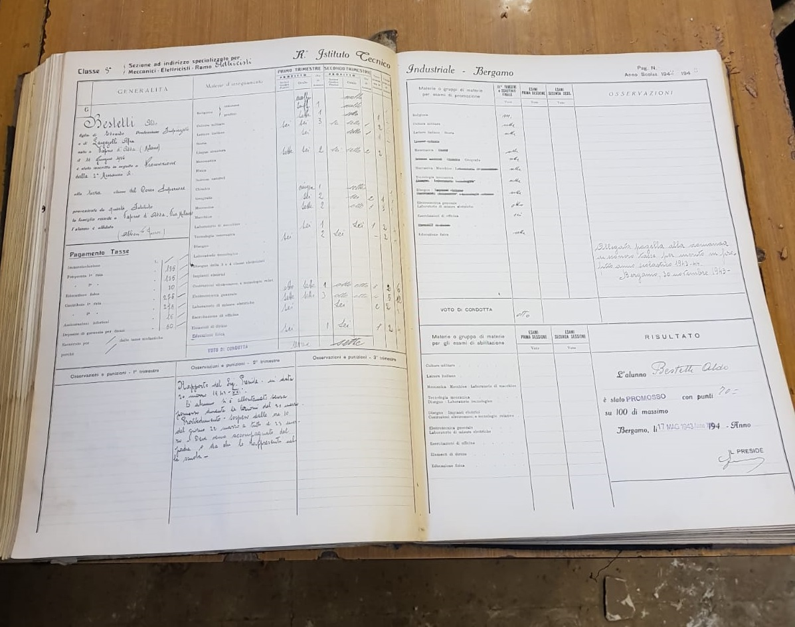

Archivio - 1
Piano -1
Oggetto numero 13
Oggetto (libro) 13

Descrizione:
Il seguente registro contiene il nome di uno studente,
i giorni di assenza, i suoi voti ed il voto di condotta; una nota posta a lato della pagina del registro che uno studente ha interrotto gli studi
a causa della deportazione nella seconda guerra mondiale.